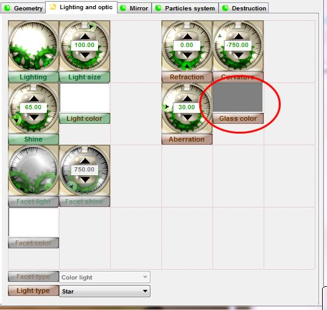
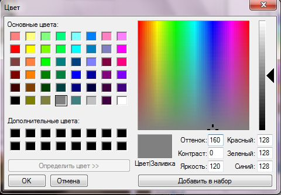
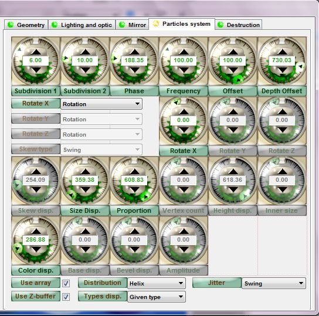

Плагин Panopticum LensPro 3.0 (Часть 3)
Плагин Panopticum LensPro 3.0 (Часть 1)
Плагин Panopticum LensPro 3.0 (Часть 2)
Продолжение урока о плагине Panopticum LensPro 3.0.
Примечание: нумерация рисунков сквозная, т. е. рис. 1, например, находится в Части 1 урока об этом плагине.
Optic Effects (Оптические Эффекты)
При использовании Panopticum Lens Pro 3.0 можно получить линзу с широким диапазоном оптических характеристик. У Panopticum Lens Pro 3.0 есть много параметров, которые корректируют оптические свойства линзы, такие как: Curvature (Кривизна), Refraction (Преломление), Aberration (Аберрация) и Color of Lens (Цвет Линзы), и т.д.
Примечание: Аберрация – это искажения изображения, вызванные неидеальностью оптической системы: изображение не вполне отчетливо, неточно соответствует объекту или окрашено.
Refraction (Преломление)
Здесь изображена Ellipse (Эллиптическая) линза (рис. 20) с различными параметрами преломления:
Изображение 1 – исходное изображение
Изображение 2 – значение преломления равно 0.
Изображение 3 – значение преломления минимально
Изображение 4 – значение преломления максимально.
Curvature (Кривизна)
На рисунке 21 показана линза с различными параметрами кривизны:
Изображение 1 – исходное изображение
Изображение 2 – значение кривизны равно 0.
Изображение 3 – значение кривизны минимально.
Изображение 4 – значение кривизны максимально.
Aberration (Аберрация)
На рисунке 22 показана линза с разнообразными параметрами аберрации:
Изображение слева - значение аберрации минимально.
Изображение справа - максимальная аберрация.
Glass Color (Цвет стекла)
На рис. 23 показана страница (вкладка) Lighting and Optic (Освещение и Оптические). Элемент управления Glass Color (Цвет стекла) обведен красным кружком.

По умолчанию цвет стекла серый, что соответствует эффекту обычного прозрачного стекла. Однако цвет можно изменить, щелкнув мышью прямо внутри элемента управления, в данном случае на сером квадратике. Это приведет к появлению стандартного диалогового окна Windows для выбора цвета (рис. 24)

На рисунке 25 показана линза с различными параметрами цвета стекла:
Color Dispersion (Дисперсия Цвета)
Примечание: Дисперсия света наблюдается в виде разложения света в спектр, напр. при прохождении его сквозь стеклянную призму.
Параметр Color Dispersion (Дисперсия Цвета) доступен на вкладке Particles System (Система частиц), о которой речь пойдет ниже. На рис. 26 показано изображение с различными значениями Color Dispersion (Дисперсии Цвета). Дополнительно скажу, что для приведенного примера, в раскрывающемся списке Distribution (Распределение), был выбран вариант Helix.
Изображение слева – исходное изображение.
Изображение по центру – минимальное значение Color Dispersion (Дисперсии Цвета)
Изображение справа– максимальное значение Color Dispersion (Дисперсии Цвета)
Color Change Frequency (Частота Изменения Цвета) - устанавливает скорость случайного изменения цвета линзы.
Light Effects (Световые эффекты)
Panopticum LensPro 3.0 содержит много параметров, которые корректируют эффект освещения, таких как: Light Type (Тип Света), Rotation of Light Source (Вращение Источника Света), Declination (Отклонение), Light Color (Цвет Света), Light Size (Размер), Light Shine (Яркость Света), и т.д. (рис. 27).
Basic Light Parameters (Основные Параметры Света)
Type of Light (Тип Света) - раскрывающийся список с вариантами типа источника света:
• HotSpot (Точечный источник) - источник света и выделения в форме круга.
• Star (Звезда) - звездообразный источник света и освещения.
• Star Invert (Обратная Звезда) - звездообразный источник света и освещения. При повороте источника света, подсветка вращается вокруг своей оси, но в направлении обратном, направлению перемещения источника света.
• Star Static (Статическая Звезда) - звездообразный источник света и освещения. Подсветка не вращается при повороте источника света.
• Window (Окно) - источник света и выделения в форме окна.
• Combine Star Star Inv (Объединенная Звезда и Обр Звезда) - звездообразный источник света и освещения. Когда источник света поворачивается, только самые отдаленные части подсветки вращаются вокруг своей оси.
• Combine Star Inv Star (Объединенная Обр Звезда и Звезда) - звездообразный источник света и освещения. Когда источник света поворачивается, только самые близкие к центру части подсветки вращаются вокруг своей оси.
• Combine HotSpot Star (Объединенный Точечный Источник и Звезда) - круглый источник света и звездообразная подсветка.
• Combine HotSpot Star Inv (Объединенный Точечный Источник и Обратная Звезда) - круглый источник света и звездообразная подсветка. Когда источник света поворачивается, звездообразная подсветка вращается вокруг своей оси в направлении противоположном направлению перемещения источника света.
• Window HotSpot (Окно и Точечный Источник) - источник света в форме окна и круглая подсветка.
• Window Star Invert (Окно и Обратная Звезда) - источник света в форме окна и звездообразная подсветка. При перемещении источника света, звездообразная подсветка вращается вокруг своей оси в противоположном направлении.
• Window Star Static (Окно и Статичная Звезда) - источник света в форме окна и звездообразная подсветка. Звездообразная подсветка не вращается при повороте источника света.
• HotSpot Window (Точечный источник и Окно) - круглый источник света и подсветка в форме окна.
• Star Window (Звезда и Окно) - звездообразный источник света и подсветка в форме окна.
• Star Invert Window (Обратная Звезда и Окно) - звездообразный источник света и подсветка в форме окна. Во время поворота источника света, звездообразная подсветка вращается вокруг ее оси в противоположном направлении.
• Star Static Window (Статичная Звезда и Окно) - звездообразный источник света и подсветка в форме окна. Звездообразная подсветка остается на месте, не вращаясь во время поворота источника света.
• Light Direction (Направление света) - настройка направления на всенаправленном источнике света.
• Light Color (Цвет Света) - настройка цвета света.
• Light Size (Размер света) - устанавливает размер источника света.
• Light Shine (Яркость Света) - корректирует яркость всенаправленного света.
Другой источник света - Facet light (Боковой свет) - становится доступным только, когда Вы выбираете 3-D кристалл любого типа из списка Object Type (Тип Объекта). Он может быть настроен следующими параметрами и опциями:
Facet Light Shine (Яркость Бокового Света) - корректирует силу.
Facet Light Direction (Направление Бокового Света) - корректирует направление.
Color Facet (Цвет Грани) - корректирует цвет Бокового света.
Draw Border (Рисовать Границу) - активировать/деактивировать окрашенные границы для граней кристалла.
Border Color (Цвет границы) - указывает цвет для границ граней кристалла.
Jitter Type (Тип отклонения) – определяет правило окраски граней кристалла.
Color Jitter (Отклонение Цвета) - определяет интенсивность окраски для каждой грани.
Shine Jitter (Отклонение Яркости) - определяет интенсивность яркости для каждой грани.
Jitter Phase (Фаза Отклонения) - определяет фазовый сдвиг нормального распределения блеска или цвета.
Period (Период) - настройка периода цветовых волн.
Параметры, корректирующие оптические свойства стекла, помещены в правой части страницы Light and Optic (Свет и Оптика).
При использовании Panopticum Lens Pro III можно получить линзу с широким диапазоном оптических характеристик. У Panopticum Lens Pro III есть много параметров, которые корректируют оптические свойства линзы, такие как: Curvature (Кривизна), Refraction (Преломление), Aberration (Аберрация) и Color of Lens (Цвет Линзы), и т.д.
Mirrors (Зеркала)
Mirror (Зеркало) - набор параметров для того, чтобы создать отражения в линзах и кристаллах (Рис. 28).
С помощью параметров следующей страницы Вы сможете поместить отражение на своем стеклянном объекте, которое сделает его вид более реалистичным и добавит некоторые интересные эффекты.
Окно предварительного просмотра этой страницы располагается в верхнем правом углу. Здесь Вы увидите, какое изображение будет помещено поверх линзы. Используя кнопку Load Picture (Загрузить Изображение) можно выбрать любое изображение в формате .bmp, как отражение. Для увеличения или уменьшения масштаба используйте кнопки «+» и «–» . Флажок Use Mirror (Использовать Зеркало) - активирует/деактивирует использование отражения.
Blend (Смешивание) - корректирует яркость зеркального слоя.
Blend in Screen Mode (Смешивание в Режиме Экран) - корректирует наложение зеркального слоя в режиме Screen (Экран).
Blend Dependence on Thickness (Зависимость смешивания от Толщины) - определяет зависимость наложения зеркального слоя на выпуклости линзы.
Value (Значение) - устанавливает выпуклость линзы для зеркальных слоев.
Offset X (Смещение по Х) - корректирует смещение по оси X.
Offset Y (Смещение по Y) - корректирует смещение по оси Y.
Tessellation (Мозаичность) - вкл\выкл мозаичный узор (отображение) нижележащего изображения.
Mirror Model (Режим Отражения) раскрывающийся список различных режимов зеркального отражения:
• Simple
• Screen Mode
• Thickness Dependence
• Screen Thickness Dependence.
Particles System (Система Частиц)
На рисунке 29 показан пример использования Particles System (Системы Частиц)
Корректируя параметры на странице Particles System (Система Частиц) (рис. 30), Вы сможете создать большое количество вариаций стеклянных объектов, их узора, дублирования.

Кроме того, можно установить закон распределения и изменения геометрических и оптических свойств линз и кристаллов. Хотя страница содержит много элементов управления, те, которые не используются сейчас, скрыты.
Когда сброшен флажок Use Array (Использовать Массив), который находится в нижнем левом углу страницы Particles System (Система Частиц), все параметры будут отключены.
Параметры страницы становятся доступными после установки этого флажка. Другой флажок Use Z-Buffer (Использовать Z-Буфер) вкл\выкл режим обрезки пересекающиеся частей линзы. Вы не увидите в окне предварительного просмотра, как работает этот параметр. Чтобы увидеть эффект, необходимо щелкнуть на кнопке OК и применить Lens Pro III к Вашему исходному изображению.
Раскрывающийся список Distribution (Распределение) содержит варианты распределения объектов по исходному изображению. Можно выбрать следующие варианты:
• Uniform;
• Cells #1;
• Cells #2;
• Cells #3;
• Radial #1;
• Radial #2;
• Helix.
Чтобы определить число стеклянных объектов используют параметры Objects Number (Число Объектов), Subdivision #1 (Разбиение № 1) и Subdivision #2 (Разбиение № 2). Чтобы определить диапазон типов стеклянных объектов в системе выбирают одно из значений раскрывающегося списка Dispersion Types (Типы Распределения):
• Given Type (Данный Тип)
• All Types (Все Типы)
• Only Lenses (Только Линзы)
• Only Crystals (Только Кристаллы)
• Only Prisms (Только Призмы)
• Only Pyramids (Только Пирамиды).
Чтобы установить случайные отклонения расположения линз из закона распределения, используйте варианты раскрывающегося списка Jitters (Отклонения):
• None (Нет)
• Chaos Jump (Хаотические Скачки)
• Swing (Колебание)
• Swing All (Колебание Всех)
• Wave (Волна)
• Chaos Wave (Хаотичная Волна)
Параметры, Phase (Фаза), Frequency (Частота) и Offset (Смещение) помогают Вам скорректировать значение и тип случайных отклонений согласно типу выбранных Jitters (Отклонений). Depth Offset (Смещение глубины) корректирует дисперсию координат линз по оси Z. Размещение линз на этой оси может быть скорректировано параметром Phase (Фаза). Используя раскрывающиеся списки Rotate X (Вращение по Х), Rotate Y (Вращение по Y), Rotate Z (Вращение по Z), можно установить правила случайных вращений для стеклянных объектов. Например, выбор Link to Rot. Angle and Swing позволяют Вам связать, расположение линз (например, Rotate или Helix) их законом распределения. Это даст следующий результат: линзы будут перевернуты в необходимом порядке и направлены к одной точке, например к центру.
Можно установить диапазон значений для вращений вокруг соответствующих осей в элементах управления, Rotate X, Rotate Y, Rotate Z. Параметры, Rotate X (Вращение по Х), Rotate Y (Вращение по Y), Rotate Z (Вращение по Z) на странице Geometry (Геометрия) также влияют на вращение стеклянных объектов, хотя они поворачивают линзы тем же самым значением.
Чтобы лучше понять, как параметры страницы Particles System (Система Частиц) работают, Вы должны понять, что у параметров страницы Geometry (Геометрия) есть математическая импликация Average (Среднего) и параметры на странице Particles System (Система Частиц), имеют математическую импликацию Dispersion (Дисперсии).
Элементы раскрывающегося списка Skew Types помогают установить закон распределения значений для искажения наклонов droplet lens (линз-капель). Чтобы получить эффект капания выберите пункт Link to X-Rotate. Сделайте следующее: выберите в раскрывающемся списке Object Type (Тип объекта) тип Droplet, а в раскрывающемся списке Rotate X (Вращение по Х) – Swing, скорректируйте значение дисперсии для параметра X Rotation, например 45 градусов. В раскрывающемся списке Skew Type выберите - Link to X-Rotate и установите максимальное значение для Skew Dispersion. Установите требуемое значение параметров Phase (Фазы). Это даст Вам изображение капающих капелек с вращением и наклоном, как будто это происходит в движении. Чтобы скорректировать значения случайного наклона для капель используют элемент управления Skew Dispersion (Дисперсия Наклона).
Size Dispersion (Дисперсия размера) - корректирует дисперсию размера для стеклянных объектов.
Proportion Dispersion (Дисперсия пропорции) - корректирует дисперсию параметра Proportion..
Vertex Count Dispersion (Дисперсия Количества Вершин) - корректирует дисперсию числа вершины для кристаллов.
Height Dispersion (Дисперсия высоты) - корректирует для некоторых линз и кристаллов дисперсию значений для параметра Height (Высота).
Inner Size Dispersion (Дисперсия Внутреннего Размера) - корректирует дисперсию значений для параметра Inner Size (Внутренний Размер) для линз Border (Рамка) и Torus Lens (Торовидной Линзы).
Color Dispersion (Дисперсия Цвета) - корректирует дисперсию стекла цвета для линз и кристаллов.
Base Dispersion (Дисперсия Основания) - корректирует дисперсию значений для параметра Base (Основание).
Bevel Dispersion (Дисперсия наклона) - корректирует дисперсию значений для параметра Bevel (Наклон).
Amplitude Dispersion (Дисперсия Амплитуды) - корректируется дисперсия значений для параметра Amplitude (Амплитуда) линзы Rose (Роза).
Destruction (Деструкция)
Panopticum Lens Pro содержит мощный встроенный инструмент для создания спецэффектов. Используя параметры на странице Destruction (Деструкция) Вы сможете получить некоторые очень интригующие 3-D эффекты как постепенный рост или разрушение 3-D объектов. Раскрывающийся список Completeness Mode в нижнем левом углу страницы, содержит варианты роста объектов:
• Rough
• Fade
• Rough by Segment
• Fade by Segment
• Fade by Group of Segment
Поэкспериментируйте с этими вариантами, чтобы изучить, как это легко, получить эффект 3-D роста объектов. Параметры Completeness и Completeness Zone настраивают фазу постепенного роста и область (зону) постепенной визуализации граней объекта. Раскрывающийся список Destruction (Деструкция) помогает сделать эффект деструкции 3-D объекта. Варианты этого параметра:
None (Нет)
Bomb (Бомба)
Volume Bomb (Объемная бомба)
Erosion (Эрозия)
Volume Erosion (Объемная эрозия)
Gradual Erosion (Постепенная Эрозия)
Gradual Volume Erosion (Постепенная Объемная Эрозия)
Tornado (Торнадо)
Volume Tornado (Объемный Торнадо)
В окне предварительного просмотра Вы будете видеть разницу в деструкции объекта при выборе различных вариантов. Элемент управления Destruction (Деструкция) устанавливает фазу деструкции. ЗАМЕЧАНИЕ! Значение параметра может быть больше и меньше нуля, которое дает различные варианты эффекта.
Например, если тип деструкции, Erosion (Эрозия) и фаза будут больше нуля, то объект разрушается внизу, и с фазой меньше нуля, объект разрушается вверху. Параметр Force (Сила), определяет начальную скорость удаления частиц. Отметьте, что у этого параметра могут также быть положительные и отрицательные величины, дающие различные эффекты деструкции.
Параметры Dispersion (Дисперсия) и Turbulence (Турбулентность) определяют хаотичность удаления частиц и вращения.
Gravity (Гравитация) - настраивает силу гравитации в соответствие с «разлетающимися» частями.
Wind Force (Сила ветра) - приводит силу ветра в соответствие с «разлетающимися» частями.
Wind Direct и Wind Direct 1 (Прямой ветер и Прямой ветер 1) - корректируют направление ветра.
Rotate Speed и Tornado Bend (Скорость Вращения и Изгиб Торнадо) - установка дополнительных искажений для деструкции типа Tornado (Торнадо) и Gradual Tornado (Постепенного Торнадо). Как напоминание: можно всегда изменять диапазон значений для любого элемента управления. Только щелкните по элементу управления правой кнопкой мыши.
На этом я закончу описание данного плагина. Как видите, с его помощью можно добиться очень многих красивых эффектов.
Кстати, может кто напишет про линзы в CorelDRAW? Если кто возьмётся, готов выступить в роли консультанта/корректора :)
Baryga88, Здорово!!!